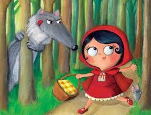

Había una vez una dulce niña que quería mucho a su madre y a su abuela. Les ayudaba en todo lo que podía y como era tan buena el día de su cumpleaños su abuela le regaló una caperuza roja. Como le gustaba tanto e iba con ella a todas partes, pronto todos empezaron a llamarla Caperucita roja.
Un día la abuela de Caperucita, que vivía en el bosque, enfermó y la madre de Caperucita le pidió que le llevara una cesta con una torta y un tarro de mantequilla. Caperucita aceptó encantada.
La niña caminaba tranquilamente por el bosque cuando el lobo la vio y se acercó a ella.
El lobo mandó a Caperucita por el camino más largo y llegó antes que ella a casa de la abuelita. De modo que se hizo pasar por la pequeña y llamó a la puerta. Aunque lo que no sabía es que un cazador lo había visto llegar.
El lobo entró, se abalanzó sobre la abuelita y se la comió de un bocado. Se puso su camisón y se metió en la cama a esperar a que llegara Caperucita.
La pequeña se entretuvo en el bosque cogiendo avellanas y flores y por eso tardó en llegar un poco más. Al llegar llamó a la puerta.
Cuando Caperucita entró encontró diferente a la abuelita, aunque no supo bien porqué.
En cuanto dijo esto el lobo se lanzó sobre Caperucita y se la comió también. Su estómago estaba tan lleno que el lobo se quedó dormido.
En ese momento el cazador que lo había visto entrar en la casa de la abuelita comenzó a preocuparse. Había pasado mucho rato y tratándose de un lobo…¡Dios sabía que podía haber pasado! De modo que entró dentro de la casa. Cuando llegó allí y vio al lobo con la panza hinchada se imaginó lo ocurrido, así que cogió su cuchillo y abrió la tripa del animal para sacar a Caperucita y su abuelita.
De modo que le llenó la tripa de piedras y se la volvió a coser. Cuando el lobo despertó de su siesta tenía mucha sed y al acercarse al río, ¡zas! se cayó dentro y se ahogó.
Caperucita volvió a ver a su madre y su abuelita y desde entonces prometió hacer siempre caso a lo que le dijera su madre.